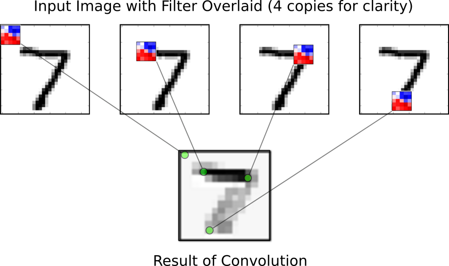
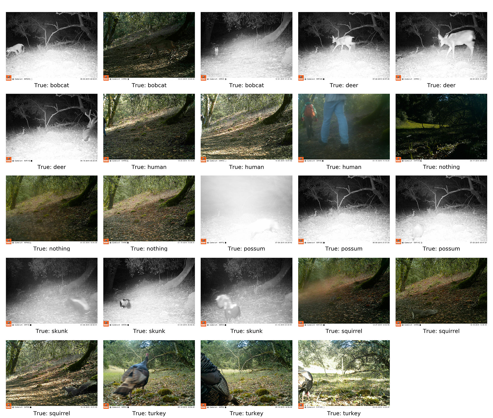
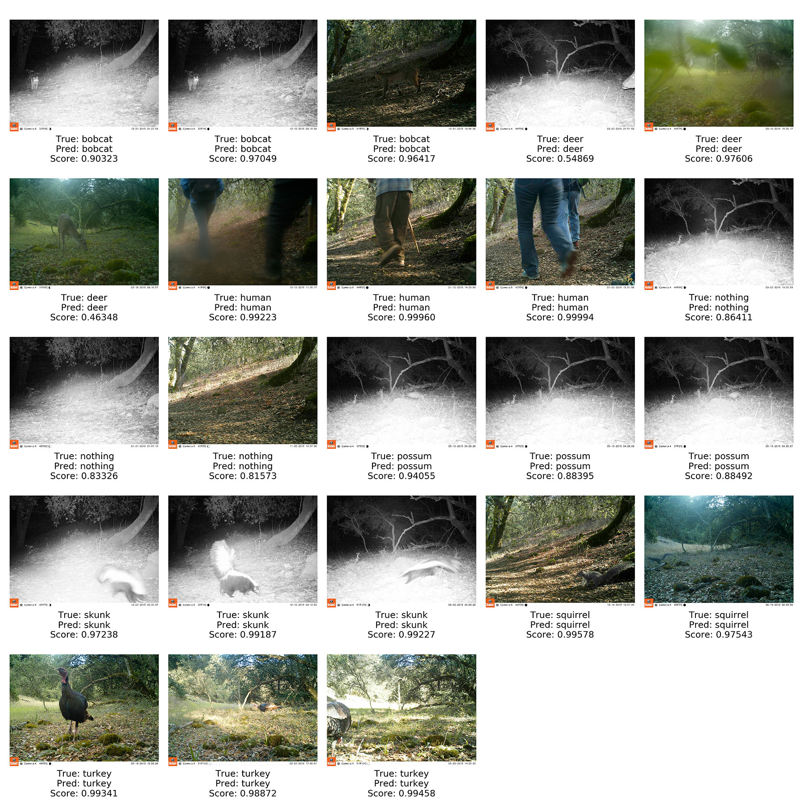
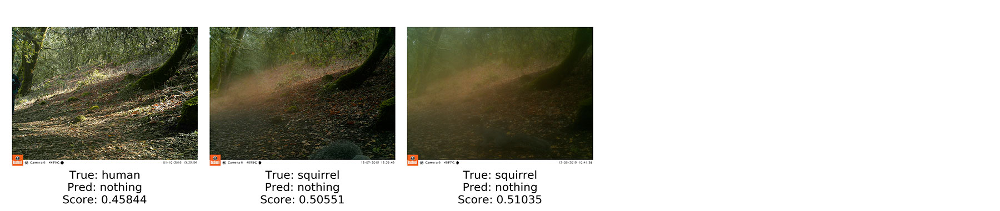
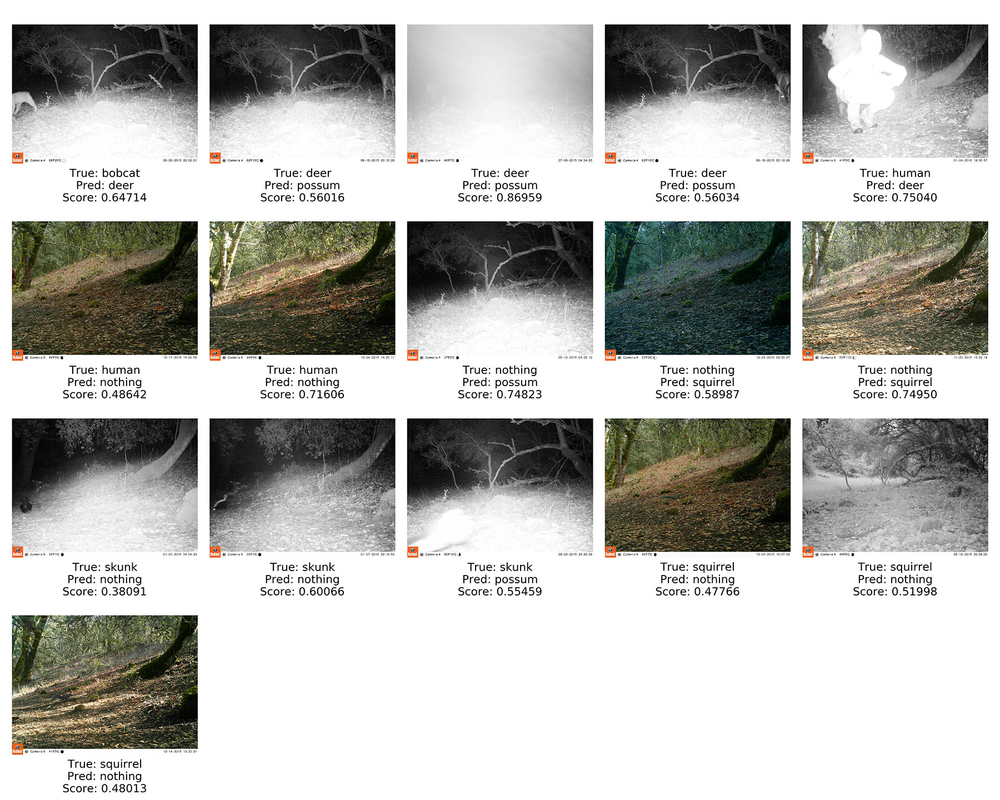

CS 385 : Image Classification with Retrained Convolutional Neural Networks
Project Goal
Identify animals and detect whether an animal is present in images from the SSU Preserves data set using retrained convolutional neural networks.
Data Set
The SSU Perserves data set consists of two folders of images from motion sensing cameras. One folder is labeled Camera3Faraway and contains ~3500 images. The other is labeled Camera4Trail and contains ~8300 images. The images came unlabeled so we built a tool to help us manually label them. Some images were unusable because it was unclear what type of animal they contained or because the animal appeared too rarely. For this report we were able to label ~1000 images from Camera3 and ~600 images from Camera4 making a final data set consisting of ~1600 usable images.
Convolutional Neural Networks & Transfer Learning

The inception v3 network, from https://research.googleblog.com/2016/03/train-your-own-image-classifier-with.html.
CNN's use volumes of neurons (image from Wikipedia).
From https://github.com/Hvass-Labs/TensorFlow-Tutorials.
Convolutional neural networks are a type of neural network architecture inspired by biological image processing systems. They consist of very long chains of operators with many parameters, which are tuned during a process called "learning".
Typically training an entire convolutional neural network can take weeks and require a lot of computational power. But there is a way around this; a network that has already been trained to recognize images can be modified to recognize different sets of images.
The TensorFlow library developed at Google and now open-sourced does these types of computations, and several API's exist in different languages. With TensorFlow, we can use the InceptionV3 network (pictured above), which was trained for image recognition contests for datasets consisting of as many as 1000 classes. Training this network on a desktop with 8 NVIDIA Tesla K40s takes about 2 weeks. This network can be retrained through a process known as "transfer learning". Transfer learning enables us to remove the final layer of the network and retrain it to recognize images from our dataset. We used a modified example script to retrain the network successfully.
Transfer learning uses the features identified by the inception v3 network to train a new classifier, from https://github.com/Hvass-Labs/TensorFlow-Tutorials.
Retraining
The retraining script randomly splits images into three groups:
- Train (80%): used for training the network
- Validation (10%): used to check the progress of training
- Test (10%): used to get accuracy after training is complete
While the model is retraining it will print periodic updates:
2016-12-07 00:21:09.566693: Step 19000: Train accuracy = 100.0%
2016-12-07 00:21:09.566764: Step 19000: Cross entropy = 0.059450
2016-12-07 00:21:09.591180: Step 19000: Validation accuracy = 90.0%
When it's done retraining, images from the testing group are used to get final accuracy and a confusion matrix, which are printed along with a parameter summary:
Final test accuracy = 96.2%
[[16 0 0 0 0 1]
[ 0 9 1 1 0 0]
[ 0 0 14 0 0 0]
[ 0 0 0 12 0 0]
[ 0 0 0 0 15 0]
[ 0 0 0 0 0 11]]
dict_keys(['squirrel', 'possum', 'deer', 'nothing', 'skunk', 'turkey'])
Training Steps: 20000
Learning Rate: 0.001
Train Batch Size: 20
Validation Batch Size: 20
Test Batch Size: 100
Classifying
When a neural network makes a classification it returns a score for each class it knows. The class with the highest score is often used as the predicted class, though in some cases you may want to look at the top 3 classes for example. The score could also be used as a measure of certainty though technically it is not.
Results
Results(1): Classifying images from one camera after training on the other
The inceptionV3 network was retrained using data from SSU preserves Camera4, using default parameters for the example script (retrain.py) and subsequently tested on images from Camera3. The resulting accuracy was 0.641182466871 . Below is the confidence matrix and ROC curve for this run
This was less than ideal because the training set contained fewer images than the test set. Also, the classifier may have been learning from features that were unique to that specific camera location rather than being more general.
Results(2): Selecting random 20 from manually classified images
Our entire data set looks like
37, ./training_images/bobcat
627, ./training_images/deer
143, ./training_images/human
332, ./training_images/nothing
26, ./training_images/possum
87, ./training_images/skunk
384, ./training_images/squirrel
40, ./training_images/turkey
1676, Total
This time, 20 images were randomly selected from each class in the dataset and put aside. In addition, the classes bobcat, possum, and turkey were removed because they had the fewest samples. The training batch size was lowered to 20, and the learning rate was lowered to .001. The testing accuracy was 87.6%. Here are the confidence matrices and the ROC curve.
Results(3): Selecting random 20 from a test set derived from a different camera
Was the classifier learning things specific to the camera or how to recognize animals more generally? Images were separated by camera, and classes were removed from the training set that did not have enough images for either the training or the testing camera (turkey, possum, human, bobcat). Here is the directory listing:
558, ./trainingDir/deer
192, ./trainingDir/nothing
30, ./trainingDir/skunk
189, ./trainingDir/squirrel
20, ./testDir/deer
20, ./testDir/nothing
20, ./testDir/skunk
20, ./testDir/squirrel
Here are the resulting confidence matrix and ROC curves
Results(4): Training with all manually classified images
After combining manually labeled images from both cameras we get one data set with class frequencies:
- bobcat 37
- deer 628
- human 143
- nothing 332
- possum 26
- skunk 87
- squirrel 384
- turkey 40
Final test accuracy = 94.0%
[[14 0 0 0 1 0 0 0]
[ 0 13 0 0 0 0 0 0]
[ 0 0 10 0 0 0 0 0]
[ 0 0 0 12 0 1 2 0]
[ 0 0 0 0 9 0 0 0]
[ 0 0 0 0 0 11 0 1]
[ 0 0 0 0 0 0 14 0]
[ 0 0 0 1 0 0 0 11]]
dict_keys(['possum', 'turkey', 'bobcat', 'nothing', 'deer', 'skunk', 'human', 'squirrel'])
Training Steps: 20000
Learning Rate: 0.001
Train Batch Size: 20
Validation Batch Size: 20
Test Batch Size: 100
Training Set Examples
3 images randomly selected from each class.
Test Set Correct Classification Examples
For each class up to 3 correctly classified images were randomly selected after running the test set through the retrained neural network. Most of the scores are high with the major exceptions being a deer whose head can barely be seen (understandable) and a deer grazing in front of the camera. The low score for the deer in front of the camera is odd but the lighting has a blue tint not present in most images.
Test Set Misclassification Examples
All the misclassified images after running the test set through the retrained neural network. The classifier thinks the images contain nothing although the scores are low. The subjects off to the side and fog may cause the classifier to have difficulty.
Training Set Misclassification Examples
Since there were only 3 misclassifications in the test set, to get a better idea of what kinds of images give the classifier trouble with we ran the whole training set through as well. For each class up to 3 misclassified images were randomly selected. Again the nothing class is commonly is involved in misclassification. Night time images also have issues. Most of the scores are still low however.
Conclusions
Over multiple tests, accuracy ranged from 83% to 97% (except for result(1) which used a naive approach). The variability is mainly attributable to the images being randomly split into training and testing sets. The general trend of the nothing class and night time images being the main difficulty is apparent in each test. It looks as if the classifier will learn to interpret camera specific features. This means that if this system were to be deployed, it might do poorly classifying images from an unknown camera, though it still does better than random chance. If labeled data were to be provided/created for more cameras, work could be done trying to get some kind of camera-independent accuracy. Overall the classifier performed well given the size of the training set and the imbalanced class sizes. Transfer learning appears to be a viable method for identifying animals and determining if a photo contains an animal, assuming only photos from known cameras are classified. It will be interesting to see how well retraining works with models other than Inception-v3 and with data sets that come from a large number of different trail cameras.